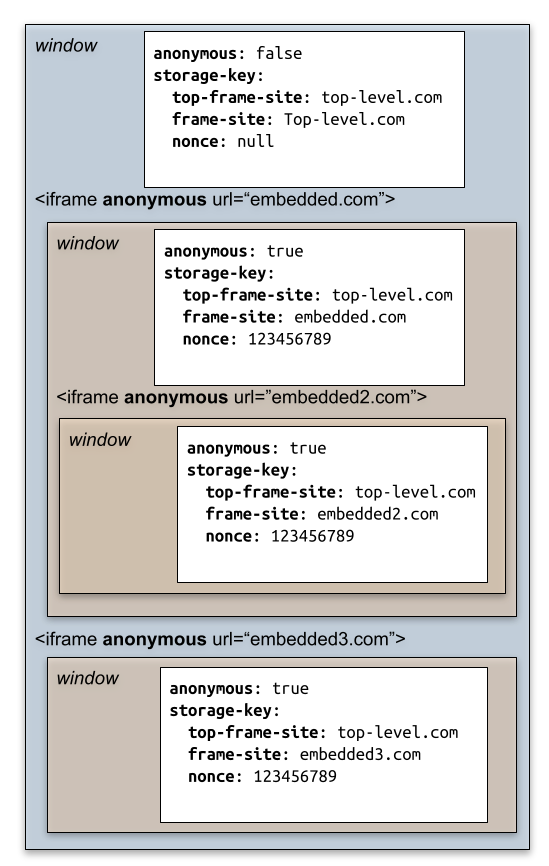
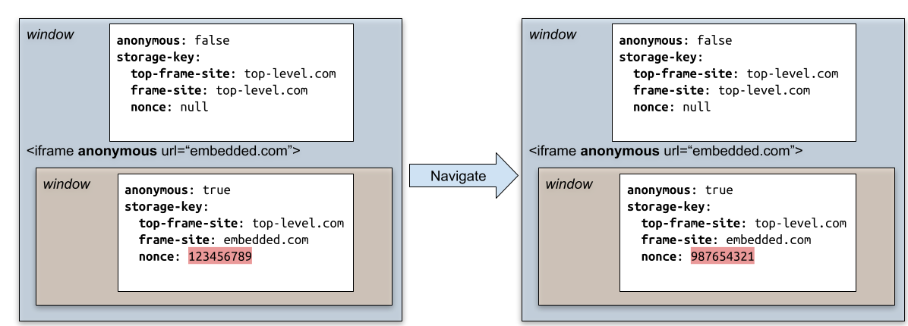

1. Introduction
This section is not normative.
1.1. Recommended readings
-
The [Spectre] vulnerability.
-
The [COEP-require-corp] and [COEP-credentialless] headers.
-
How and why Cross-Origin-Opener-Policy (COOP) and Cross-Origin-Embedder-Policy (COEP) are granting the crossOriginIsolated capability. See [WhyCoopCoep].
1.2. A problem
Deploying COEP is difficult for some developers, because of third party iframes. Here is the typical scenario:
-
End users needs performant websites.
-
Some developers get performant websites, by using multithreading/
SharedArrayBufferin their top-level document. -
To mitigate [Spectre] attacks, browsers vendors like Chrome, Firefox and Safari gate
SharedArrayBufferusage behind the crossOriginIsolated capability. This requires deploying both COEP and COOP -
COEP requirement is recursive: third party iframes are required to deploy COEP in order to be embeddable inside a COEP parent.
-
Waiting for third party to deploy COEP is painful for developers. This is often out of their control most of the time.
Beyond performance, there are additionnal features gated behind the crossOriginIsolated capability: high resolution timers, getViewportMedia, etc...
Deploying COEP is challenging in cases where there’s not a single developer involved, but many. Google Ads, for example, includes third-party content, and it seems somewhat unlikely that they’ll be able to ensure that all the ads creators will do the work to opt-into being loadable.
1.3. Explainer
[COEP-require-corp] currently tackles data leak attacks by ensuring that cross-origin resources explicitly opt into being loaded in an environment with higher risks. This way, servers can protect vulnerable resources by not having them opt into being loaded in high risk environments.
It would be ideal if we could find an approach that provided robust-enough protection against accidental cross-process leakage without requiring an explicit opt-in.
[COEP-credentialless] fixed the problem for simple subresources: Instead of requiring an opt-in from the response, the resource is requested without credentials. This way, only public resources are potentially leaked to the attacker. They don’t bring any additional value to the attacker.
Anonymous iframes are similar, but for <iframe>.
Iframes are more difficult to tackle. They not only fetch a resource via a
navigation request, but also create a new context. The new context is able to
fetch data on its own. It can also access data from storage APIs: [WebStorage], [IndexedDB], [web-sql], BroadcastChannel, SharedWorker, ServiceWorker, etc
Anonymous iframes is a flag to load documents in iframes, using a new and ephemeral context. This ensures only a "public" version of the embedded website can be leaked to the attacker.
1.3.1. What are anonymous iframes?
Documents can create anonymous iframes by adding an anonymous attribute to the
iframe tag:
< iframe anonymous src = ”https://example.com” ></ iframe >
This property is stored on the iframe. It is also stored and inherited to new Window loaded inside e.g.:

Anonymous flag inheritance.
Similar to sandbox flags, the attribute can be changed programmatically on the <iframe>. It will take effect on new Window loaded inside. It means the
effect will only take place after an additional navigation.
The state of the anonymous flag is exposed to the Window through a read-only constant attribute:
windowIt is true for Window loaded immediately inside an anonymous iframe, or deeper below it.. anonymous
1.3.2. Anonymous iframes and credentials
Anonymous iframes cannot use existing credentials and shared storage for their origin. They are given a blank slate. Unlike sandboxed frames, they can use storage APIs and register cookies. However, those credentials and storage can only be shared by documents in anonymous iframes in the page (provided they meet origin restrictions). They will no longer be accessible once the page has navigated. Essentially, anonymous iframes are given a temporary storage shelf partitioned to anonymous iframes in the page.
To achieve this, we rely on modifying the storage key used to access shared storage by anonymous iframes. As part of the client-side storage partitioning effort (declined across storage APIs, network state and Cookie State), the storage key of an environment will no longer be its simple origin as currently described in the spec. Instead it will be a combination of the origin and the top-level site URL. In an anonymous iframe, we will replace the top-level site URL in the partition key by a nonce value, determined once per page. This nonce will be recomputed every time the top-level frame navigates. This ensures that anonymous iframes cannot share storage keys with non-anonymous iframes. Because the nonce is changed on every page navigation, anonymous iframes do not share storage across different pages, or across navigations.

Storage and credentials are only shared among anonymous iframes, following normal site/origin access checks.

Storage and credentials created by anonymous iframes are no longer accessible after the top level frame navigated away because the Storage key for anonymous iframes will have changed. This applies to top-level history navigations as well, meaning that when the page navigates away, anything stored by anonymous iframes can be cleared by the browser, unless the page was stored in a back-forward cache.
Popups opened by anonymous iframes are not anonymous. However, we impose that popups opened by anonymous iframes are opened with rel = noopener set. This is done to prevent OAuth popup flows from being used in anonymous iframes. See the threat model part for a discussion on why we impose this restriction.
1.3.3. How do anonymous iframes interact with COEP?
Our proposition is that anonymous iframes are safe enough to embed in a COEP page, even if they haven’t opted to do so by sending a COEP header. Thus, when navigating to a document in an anonymous iframe, we do not check whether it has a COEP and CORP header, even if its parent does not have a COEP of unsafe-none.
This also means that anonymous iframes can be embedded in cross-origin isolated pages without documents in them having to deploy COEP.
1.3.4. Anonymous iframes and autofill/password managers
Browsers that implement autofill or password manager functionalities should make them unavailable in anonymous iframes. The goal of anonymous iframes is to preserve storage critical to an iframe function, but to avoid users logging into anonymous iframes. Autofill and password managers make logging in easier, and so should be avoided to prevent users accidentally logging in. This also allows anonymous iframes to have a threat model similar to a phishing page (see the Threat model part of this explainer below).
2. Tests
The proposal is backed by the following tests:
Status: https://wpt.fyi/results/html/cross-origin-embedder-policy/anonymous-iframe/
3. Specification
3.1. Integration with HTML
Note: This corresponds to the following HTML specification change: whatwg/html/pull/7695.
3.1.1. The Iframe attribute
In the the iframe element section, define the HTML iframe anonymous attribute:
It is exposed to the Javascript HTMLIFrameElement interface:
[Exposed =Window ]interface :HTMLIFrameElement HTMLElement { // [...]attribute boolean ; // [...] };anonymous
The IDL attributes anonymous, must reflect the respective content attributes of the same name.
3.1.2. The Window attribute
Add a read-only constant anonymous attribute
to the Window object.
[Global =Window ,Exposed =Window ,LegacyUnenumerableNamedProperties ]interface :Window EventTarget { // ...readonly attribute boolean ; // ... };anonymous
3.1.3. General section
Add an "Anonymous iframe" sub-section inside Loading web pages section, in between the Sandboxing one and the Sandboxing one and the Cross-origin opener policies ones:
Window has a constant anonymous flag.
An anonymous Window is a Window, whose anonymous flag is true.
-
Set embedder be browsing context’s container.
-
If embedder is not an element, return false.
-
Otherwise, set parentWindow be the embedder’s node document’s relevant global object.
-
Return the union of:
Add several notes in the general section, gathering changes spread elsewhere in the other algorithms.
Note: New Window's anonymous flag is computed either from the initial window anonymous flag algorithm for
new browsing context, or from the navigation’s anonymous flag algorithm, executed
when the navigation started, for navigations inside pre-existing browsing context.
Note: Popup opened from anonymous Window are always with noopener set.
Note: Top-level anonymous Window do not exist.
Defining the page anonymous nonce.
Each top-level Window has an associated page anonymous nonce. It
is an immutable nonce ("number used once").
Define how browsers should handle their autofill features.
Autofill and anonymous iframe: User agents sometimes have features for helping users fill forms in: for example prefilling the user’s address, password, or payment informations. User agents must disable those features when the data is both specific to the user and to the website.
3.2. Integration with Fetch
4. Security considerations
Because anonymous iframes can be embedded in crossOriginIsolated contexts, in browsers without Out-of-Process-Iframes, we have to consider that their embedder can perform a [Spectre] attack to read any of the anonymous iframes resources, including the HTML. Our approach to this threat is not to prevent the attack from happening, but to avoid loading personalized data so that an attacker has only access to publicly available data.
To do so, we consider a variety of possible attacks:
4.1. Usage of existing credentials
The most dangerous attack is also the most straightforward. The attacker embeds an anonymous iframe with resources for which the user already has credentials. The attacker then reads the personalized resources inside the iframe, which are not public data.
Mitigation:
Anonymous iframes do not have access to existing credentials stored by their origin. This includes cookies. This also includes any data in the origin shared storage, as it could have been retrieved using credentials, hence personalized. Anonymous iframes start from a blank slate to prevent an attacker from loading resources using existing credentials.
4.2. Usage of new credentials
In this attack, the attacker embeds an anonymous iframe. As explained above, the anonymous iframe starts from a blank slate when it comes to credentials and shared storage. However, the anonymous iframe could register new credentials and use those to request personalized resources. The attacker can then read those. In practice, we can divide this scenario into two. First usage of credentials storing state necessary to make the iframe site work, but which is not particular to a user. This case is not problematic, as it is publicly accessible data. The second one is state personalized by user, which would be acquired after the user logs into the anonymous iframe.
Finally, there is the question of how long such credentials should persist, and how they should be shared across anonymous iframes. For example, one could imagine that the user visits a legitimate page with an anonymous iframe A where they log in. Then they visit an attacker page with an anonymous iframe of the same origin A. If they are still logged into A, the attacker page could steal data from personalized subresources.
Mitigation:
If the user is directly typing their credentials in the iframe to log-in, they are logging into the iframe, in a page with a different URL shown in the omnibox. This is similar to a phishing attack both in user action needed for the attack to happen and outcome. This case shouldn’t require extra-mitigation.
When the user is using a popup-driven OAuth flow (or the upcoming WebID API), the situation is harder to understand from the user’s perspective. To prevent this from happening, we restrict the iframe ability to open popups (e.g. all popups are opened with no-opener set), and access the WebID API when it ships.
In terms of lifetime and sharing of credentials, they are bound to the lifetime of the anonymous iframe. So if a page creates an anonymous iframe, documents in the subtree of the anonymous iframe get a clean slate of credentials and shared storage. Documents in the subtree can create credentials. They can share them among themselves (as long as they respect the same-origin policy), and only among themselves. So if two pages are opened at the same time with two anonymous iframes with the same origin, the anonymous iframes cannot share their credentials. Once the anonymous iframe is destroyed, the credentials that were created in its subtree should no longer be accessible. This ensures that we preserve as much functionality for the anonymous iframe as possible, while minimizing the risk of accidentally leaking data.
4.3. Personalized resources based on network position
This is a variant of the previous attack, where the user embeds an iframe with private subresources the user is only allowed to access due to their network position. For example, resources found on the user private network, or resources personalized based on a user IP address.
Mitigation:
We plan on dealing with the private network case by deploying Private Network Access restrictions. During the CORS preflight introduced by Private Network Access restrictions, the servers will be able to check that their resource will be rendered in an anonymous iframe context by checking the Sec-Fetch-COEP header. Note that only local-network documents which enable HTTPS could potentially be exposed (because MIX should prevent HTTP resources from being loaded by a page with COI). This isn’t a strong mitigation, but will matter for things like common IoT devices. The other cases of resources personalized based on IP address are arguably a security footgun already. We think that the increased risk there is okay compared to the advantage of not using credentials on more requests overall.
4.4. Capture of user input
In this attack, the attacker embeds an anonymous iframe that can receive user input. It then reads the user input.
Mitigation:
This is not in scope for anonymous iframes. An attacker can already do a phishing attack where they construct a fake page using publicly available resources and trick the user into entering data. This attack is equivalent, since the URL shown to the user in the navigation bar will still be that of the attacker.
4.5. Anonymous iframes using side-channels to personalize themselves
The anonymous iframe could use side-channels (e.g. broadcast channels, postMessage) to attempt to get a form of personalization despite the lack of credentials. The personalized resources are then readable by the embedder.
Mitigation:
Depending on whether the mechanisms highlighted above are a common way of personalizing resources, this might be out-of-scope. What we want to defend against is unsuspecting websites being embedded and attacked by their embedder to steal user data. If the anonymous iframe is bent on escaping the constraints of anonymous iframes to personalize itself, then one can argue that it understands the contexts and risks it is loaded in and accepts them. Provided our security model is safe enough outside of anonymous iframes, the personalization will only affect resources that are same-origin with the iframe anyway. Cross-origin resources to the framed document will still be unpersonalized, making this equivalent to COEP:credentiallesss from a security perspective.
5. Privacy considerations
The main privacy threat posed by this API is the risk of a data leak through a side channel attack like [Spectre]. As detailed in the threat model above, we believe the API provides a meaningful defense against [Spectre] attacks, and thus does not pose a privacy risk.